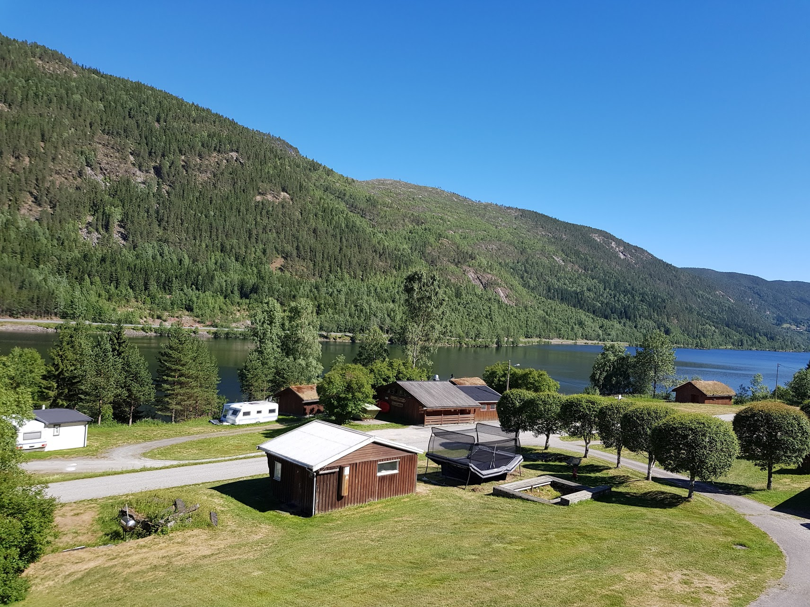

Activiteiten / omgeving.

Rødberg
Fjordgløtt Camping og Hyttesenter ligt ca. 6 km ten zuiden van de plaats Rødberg.
In Rødberg zijn banken, supermarkten, benzinepompen, garagebedrijven, postkantoor etc.
Langedrag Naturpark
Ca. 25 km van de camping ligt het natuurpark Langedrag. In Langedrag
(zie ook http://www.langedrag.no)
zijn alle inheems Noorse diersoorten te bewonderen. Zo zijn er rendieren, wolven, lynxen, bergvossen,
fjordenpaarden, wilde zwijnen en nog veel meer kleine dieren. Hier kunt u volop genieten van de wonderschone
flora en fauna welke Noorwegen te bieden heeft. Wilt u paardrijden? Ook dit kunt u regelen bij Langedrag!
Nore og Uvdal Bygdetun
Tussen Rødberg en Uvdal ligt op ca. 15 km van de camping de Nore og Uvdal Bygdetun.
In deze tuin zijn vele historische gebouwtjes en schuurtjes te zien welke van oorsprong in deze streek
voorkwamen. Absoluut hoogtepunt is de staafkerk uit de 12e eeuw, een originele houten kerk welke u echt
van binnen moet hebben gezien!
More information:
Uvdal.no
Dresin in Veggli
Houdt u van fietsen en wilt u iets nieuws proberen? Tussen Veggli
(ca. 30 km ten zuiden van Rødberg) en Rødberg loopt een oude spoorbaan, ooit onderdeel
van de Numedalsbanen. U kunt, fietsend met een karretje (dresin) op de spoorrail,
een heerlijke fietstocht maken naar Rødberg, of uitstappen vlak bij onze camping.
Onderweg kunt u genieten van de mooie natuur. En vergeet niet voor onderweg een heerlijk
gevulde picknickmand mee te nemen. U kunt de dresin bij ons op de camping reserveren.
Rafting
In Dagali, ca 40 km ten noorden van Fjordgløtt Camping og Hytesenter,
kunt u gebruik maken van verschillende rafting arrangementen.
Zo kunt u kiezen uit 3 verschillende tours te weten standaard,
extreme en extreme plus. Voor elk wat wils dus!
More information:
www.dagaliopplevelser.no/
Karting en rally rijden.
U kunt nu karts, all terrain vehicles en rally auto's huren vlak bij Dagali Airport
bij Dagali Opplevelser. Het hele jaar door kunt u hier terecht met groepen of voor een individueel
arrangement. D.O. zorgt voor alle noodzakelijke veiligheidsmiddelen en werkt met gecertificeerde
instructeurs welke allen actief zijn in de autosport.
Hardangervidda Natuurpark
Als u vanaf de camping de E-40 noordwaarts neemt komt u in het Hardangervidda Natuurpark.
Dit is het grootste Noord Europese bergplateau (3.430 km²).
Het Normannsslepa-pad is een heel oud pad welke loopt van
de oost- naar de westkant van het plateau. Langs dit pad
is nog veel terug te vinden van de vroegere bewoners.
Het Hardangervidda Natuurpark is een perfect gebied om te wandelen,
mountainbiken en uiteraard in de winter skiën en langlaufen.
Winteractiviteiten.
Uvdal Alpinesenter (ca. 30 km van Rødberg).
" Langste piste 6 km.
" Aantal langlauf routes 3
" Aantal skipistes 8
" Totale lengte skipistes 19 km
" Hoogte verschil 620 meter
" Sledepiste.
" Ski verhuur en skischool.
Verder zijn er Alpinesenter in Dagali en Geilo. Geilo is een groot wintersportgebied en
ligt op ca. 50 minuten rijden van Rødberg.
Vissen
In de omgeving is er volop mogelijkheid om te vissen. Let op: om te mogen vissen moet
u wel in het bezit zijn van een Noorse viskaart (fiskekort). Deze is o.a. te koop bij ons op de camping.
U kunt vanuit een boot prima vissen op het Norefjord-meer welke direct aan de camping grenst.
Het Norefjord-meer wordt gevoed middels de Numedalslågen; een kleine rivier. Hier kunt u vanaf de
oevers vissen. U kunt vissen op o.a. forel en bergforel.
In de winter is het ook erg leuk om te gaan ijsvissen.